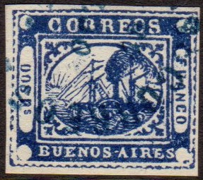
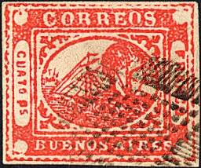

BUENOS AIRES 1858 issue, Sperati forgeries
Buenos Ayres
Return To Catalogue -
Buenos Aires 1858 issue - Buenos Aires 1858 forgeries part 1 - Buenos Aires 1858 forgeries part 2 - Buenos Aires 1860 issue and miscellaneous -
Argentine
Note: on my website many of the
pictures can not be seen! They are of course present in the
catalogue;
contact me if you want to purchase it.
Sperati forgeries
I know that Sperati also made forgeries of these
stamps, unused and used. He made one forgery of the 2 p, three
varieties of the 3 p (reproduction 'A', 'B' and 'C'), one of the
4 p, 5 p, and 4 r and two varieties of the 1 p stamp
(reproduction 'A' and 'B'). I've also seen a 'IN p' blue
tete-beche Sperati forgery. Sperati also made blackprints and
'proofs' on minisheets.
Examples of a 2 p blue, a 3 p green and a 4 p red
Sperati forgery:


Sperati forgery of the 2 r blue value. The second 'R' of
'CORREOS' has a curl, the 'S' of this word is broken. The word
'DOS' shows defects: broken top of 'D', break at bottom of 'O'
and lower part of 'S' broken. Note the dots in front and behind
the 'F' of 'FRANCO'. The central oval is broken below the left
part of the first 'R' of 'CORREOS'. A coloured dot appears in the
white line above the 'E' of 'AIRES'
The cancel 'CORREOS DE BUENOS AIRES 21 OCT 5M'
was often used by Sperati (see last image above for an example).
Reproductions 'A' and 'B' of the 3 p stamp. Both have a 'constant
cancel' that always appears in the same spot. Another
Reproduction 'C' exists.

There is a red dot in the upper left white circle of these
Sperati forgeries of the 4 p values.
There are two dots of color in the white space below the letters
'UEN' of 'BUENOS' in these forgeries of the 4 p values. The first
'R' of 'CORREOS' also has a color dot in it.
'Proof' Sperati forgery
This 4 r Sperati forgery has a brown dot in the upper left white
circle (as in the 4 p Sperati forgery)
Proof of the 4 r Sperati forgery
1 P Sperati forgery, Reproduction 'A'. There are dots in the
upper left white corner circle.
1 P Sperati forgery, Reproduction 'B'. THere is a very large blue
spot in the white space below 'S A' of 'BUENOS AIRES'. A similar
spot can be found just above the front mast of the ship.
Tete-Beche forgery of the 1 P value with 'Reproduction A' on one
side and 'Reproduction B' on the other.
The 1 P Sperati forgery also exist printed on
both sides, with 'Reproduction A' on one side and 'Reproduction
B' on the other.
I've been told that these are Sperati forgeries as well. I have
no further information.
Sperati forged cancels.
And forged mute cancels from Sperati.
Copyright by Evert Klaseboer


{kind=link}
{kind=link}